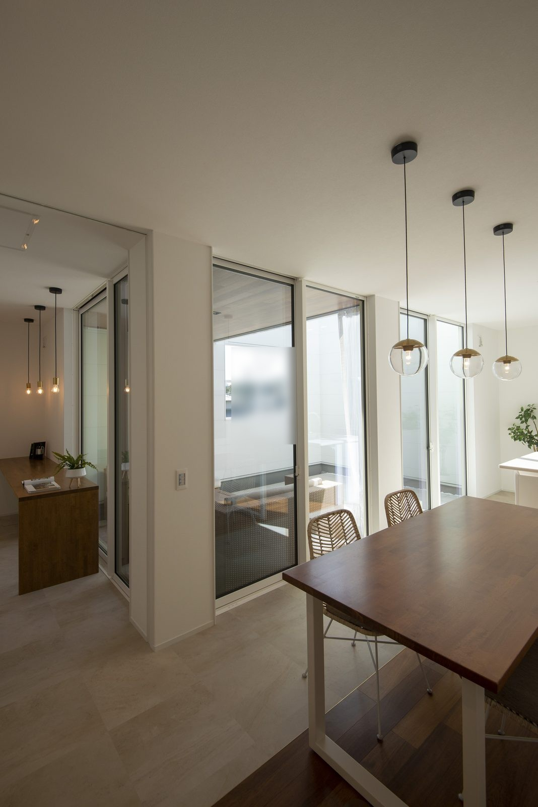
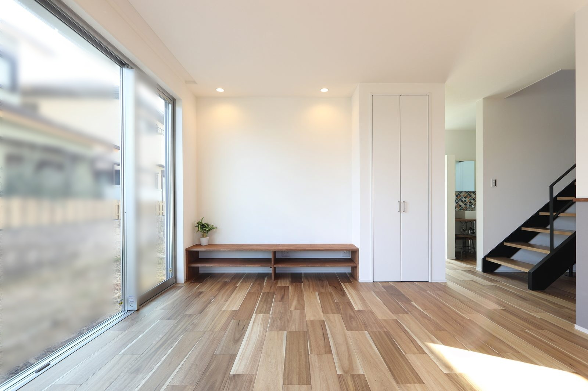

見学会で素敵な家を見ると、同じように暮らしたくなります。ただ、その家族に合う間取りが、そのまま自分たちにも合うとは限りません。奈良で家づくりを考えるなら、今の暮らしを比べる材料にしてみてください。
出かける前に、困っている場面を書く
朝、洗面台の前で順番を待つ。買い物袋を持ったまま扉を開けにくい。洗濯物をしまうまでに何度も階段を上る。こうした場面を三つほど書くと、見学先で見る場所が決まります。
「収納が多い家がいい」だけでは、必要な収納を絞れません。誰が、何を、どこへ戻すのかまで書いておくと、案内する担当者にも暮らし方が伝わります。

この実例写真では、テーブルに椅子を合わせています。見学時には、座っていない状態だけでなく、椅子を引いたときに後ろを通れるかを確かめましょう。
家具の寸法を持っていく
使い続けたいダイニングテーブルやソファは、幅と奥行きを測っておきます。写真もあると、脚の形や扉の開き方を説明しやすくなります。見学先の家具が小さければ、同じ広さでもゆったり見える場合があります。
部屋の広さだけでなく、椅子を引く場所や人が通る場所も見てください。寸法を測ってよいかは担当者に確かめ、お施主様の家では家具や設備を無断で動かさないようにします。
見学で見る順番
家事を一つ、順番にたどる
たとえば洗濯なら、脱ぐ、洗う、干す、しまうまでを見ます。洗面室と物干し場が近くても、家族の服を別の階へ運ぶなら、その移動も家事に含まれます。
買い物なら駐車場から玄関、冷蔵庫までをたどります。図面の線を眺めるだけでなく、荷物を持っているつもりで歩くと、曲がり角や扉の位置を確かめやすくなります。ご家族で感じ方が違ったところこそ、相談したい点です。

この写真では、大きな窓と奥の階段が同じ空間につながっています。部屋の明るさを眺めた後は、家具を置いても窓や階段へ歩けるか、普段の動きに重ねて見てください。
見えない部分は、質問して持ち帰る
完成した家では、壁の中や工事中の確認方法までは見えません。断熱や換気の考え方、点検する場所、設備の手入れについて、説明や資料を頼みましょう。その場で答えが出ないものは、後日確認する項目として残します。
見学後は、好きだった場所と暮らしに合いにくかった場所を一つずつ共有してください。写真の印象だけで決めず、ご家族に合う条件を少しずつ言葉にしていくことが、次の打合せにつながります。
関連記事：動画と見学会の使い分け
よくある質問
何を持っていくと役立ちますか？
今の住まいで困る場面のメモ、使い続ける家具の寸法、質問の一覧があると比較しやすくなります。
写真を撮ってもよいですか？
見学会ごとに条件が異なります。撮影や写真の共有は、事前に担当者へ確認してください。

奈良の工務店シバサンホームで、
土地さがし・資金計画・打合せの窓口をしています。
モットーはスピード・誠実さ・楽しさ。